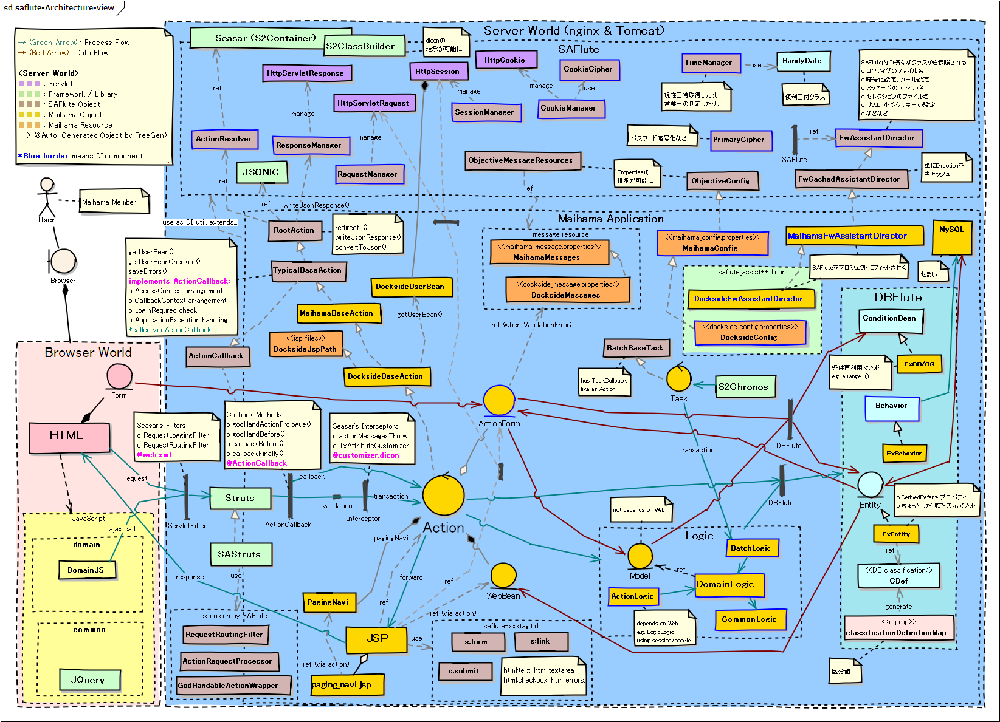

SAFlute
${indexlist}SAFluteとは？
DBFluteを使って、リーンスタートアップ、インクリメンタル開発 をターゲットに、SAStruts を最適化した拡張モジュール (+ 開発スタイル) です。
SAFluteのコンセプト
インクリメンタル開発では、業務の変更の頻度が激しく、DB変更だけでなく画面の構成の変更なども頻繁に発生します。 その特徴に対する細かいケアをしています。
- ソースコードを読むことが多いため、探しやすく
- ドキュメントを充実させる時間があまりないため、ソースコードを読んで(それまでの)仕様を確認することが多くあります。 SAStrutsのいわゆる "IndexActionだらけ" にならないように、ActionやJSPに探しやすい名前を付けられるようにしています。 (同時に、規約ベースマッピングによる統一性のメリットも享受)
- また、既に作成された画面を動かして、挙動を確認することが多くあります。 デバッグログにて、どんなActionクラスやJSPが動いたのかを見つけやすいように出力しています。
- 気付いたらよくデグレってるので、変更を検知しやすく
- 業務も変わり、プログラムも変更しまくっていると、気付いたらよくデグレっています。 Actionクラスの return 値で指定する画面遷移をタイプセーフにし、DBFluteのDB変更耐性と同じようなメリットをWeb側でも享受できるようにしています。
- JUnitTestもたくさんは書けません。テストコード自体の修正コストがとても高くなってしまうからです。 ここはジレンマがあります。少なくとも、デグレが発生したときの業務インパクト高いものだけを狙って JUnitTest を書いていくことになり、全体の機能に対してテストするのは非常に難しいでしょう。
- という感じで細かくケア
- SAFlute自体も、リーンスタートアップ、インクリメンタル開発の現場で、リーンスタートアップ、インクリメンタルに開発されました。 こういった現場のニーズをとらえながら、細かく細かく現場のスピードを高めるケアを追加しておきました。 実際に機能を見ていくとその特徴がわかるかと思います。
配布はソースコードだけ
jarファイルとしては提供されてはおらず、ソースコードだけが公開されており、自由に閲覧・取り込み・拡張ができるようになっています。"SAFluteリポジトリ" にて公開されていて、gitクライアントがあれば誰でもチェックアウト可能です。
"Maihama" プロジェクトという参考実装があります。 参考実装も含めてSAFluteと言えるので、一緒にチェックアウトしておくと良いでしょう。
詳しくは、SAFluteのプロジェクト直下に INTRO_ja.txt がありますのでそちらをご覧下さい。さらに、それぞれのプロジェクトに README_ja.txt もあります。
アーキテクチャ
SASFluteを使った Example プロジェクト Maihama (Webアプリ名は Dockside) が参考になります。ソースコードをチェックアウトして、アーキテクチャ概念マップと照らし合わせて追ってみると良いでしょう。 (クリックすると画像が開きます)
アーキテクチャ概念マップ
図 : SAFluteアーキテクチャ概念マップ 
{kind=link}
きっかけを作った二つのアプローチ
SAFluteには、様々な最適化が施されていますが、それらを実装するきっかけを作った最初の二つのアプローチがあります。
- Action, JSP Name Identity
- ActionクラスやJSPファイルの名前を識別しやすく
- Action TypeSafe Return
- Actionの@Executeメソッドの戻り値をタイプセーフに
Action/JSP Name Identity
アクションクラス名に一工夫
いわゆる IndexAction だらけ問題に対応しています。(ListActionだらけ、AddActionだらけ)
ぱっと見たいActionクラスがあっても、ctrl + shift + R (リソースの検索) をしたときに、大量の IndexAction や ListAction の前に立ち尽くしてしまう問題です。通常のSAStrutsにおけるクラス名とURLのマッピングルールは以下の通りです。
- member.ListAction
- /member/list/
- login.IndexAction
- /login/
できれば、MemberListAction でも /member/list/ にマッピングしたいと。そうすればクラス名による検索がしやすくなります。ただそのままでは /member/memberList/ というURLになってしまいます。
SAFluteでは、パッケージ名をクラス名のプレフィックスとして付与して識別性を高められます。
- member.MemberListAction
- /member/list/
- login.LoginIndexAction
- /login/
※例えば、/member/purchase/list/ であば MemberPurchaseListAction となる
JSPファイル名でも同じように
これは、JSPでも同じような拡張がされています。
s:form や s:link でaction属性やhref属性を省略した場合のマッピングは以下の通りです。
- member.MemberListAction
- /view/member/member_list.jsp
- login.LoginIndexAction
- /view/login/login_index.jsp (or login.jsp)
※例えば、/view/member/purchase/member_purchase_list.jsp であば MemberPurchaseListAction となる
通常のやり方と互換性があり
もちろん、以前のようなシンプルなクラス名やファイル名でも動きます。 単にマッピングの対象となるクラスが増えただけであり、既に通常のSAStruts構成のアプリにも適用しやすくなっています。
Action TypeSafe Return
タイプセーフな戻り値指定
Actionクラスの@Executeのメソッドの戻り値をタイプセーフに実装できます。
通常のSAStrutsにおける return の実装は以下の通りです。
e.g. 通常のSAStrutsにおける return の実装 @Java
// JSPファイル名を指定してフォワード
return "list.jsp";
// URL (Actionクラス) を指定してリダイレクト
return "/edit/" + listForm.memberId + "/?redirect=true";
これが、SAFluteでは以下のように実装できます。
e.g. SAFluteにおける return の実装 @Java
// "pa" で補完すればJSPの候補が出てくるので選ぶだけ
return path_Member_MemberListJsp;
// "redi" で補完して redirect メソッドにClassクラスでアクション指定
return redirectById(MemberEditAction.class, listForm.memberId);
FreeGenでJSPのパス定義を自動生成
JSPの path_Xxx の定義は、DBFlute の FreeGen と言われる機能で自動生成されます。JSPファイルを作成したら(作り途中でもOK)、manage.bat(sh)を叩いて 12 番を選びます。すると、Actionクラスの return 部分で pa で ctrl + space で補完すれば選択できます。
redirectメソッドでClassクラス指定
redirectXxx()メソッドは、Actionのスーパークラスに用意されています。redirectById() だけでなく、GETパラメーターを追加できるメソッドなど色々用意されています。XxxActon.class で指定できるので、リンク切れはありませんし、ctrl + クリック (F3) で遷移先のActionのプログラムをすぐに見ることができます。
間違えにくく、変更に強く、追跡しやすい
タイプセーフにすることで打ち間違えなく実装できるのと同時に、画面構造の変更などが発生したときに影響範囲を検知しやすくなります。 また、ctrl + クリック (F3) や ctrl + shift + G (呼び出し側の検索) と組み合わせることで、処理の追跡がしやすくなります。
実は、この改善は、アクションクラス名の識別性の向上が前提となっています。例えば、いくらタイプセーフでも、ListAction.class では、どの ListAction にリダイレクトするのかどうかがさっぱりわかりませんので。
さらにどんどん深みに
SAFlute自らインクリメンタル開発
きっかけを作った二つの実装から全ては始まり、Web側は時代の流れとともに新たな思想も生まれ、SAFluteのコンセプトにフィットした現場からはどんどんニーズが出てきました。
SAStrutsと半同棲の三ヶ月
SAStrutsとDBFluteの構成で、少人数でのリーン・スタートアップのサービス構築において生まれました。 基本思想と構成は、既に運用実績のあるアーキテクチャと言えます。
SAFluteの環境
SAFluteのプロジェクト構成
では、実務的なプロジェクト構成の説明に入ります。
SAFluteのパッケージ構成
そして、実務的なパッケージ構成も見てみましょう。
SAFlute Template
有志の方が作ってくださっている、SAFluteの環境構築のための Eclipse プラグインがあります。それを使う事で、SAFlute環境を手っ取り早く作ることができます。